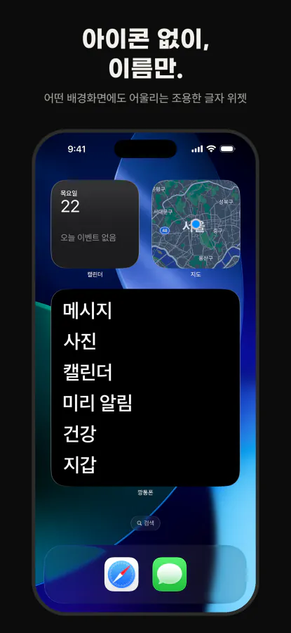
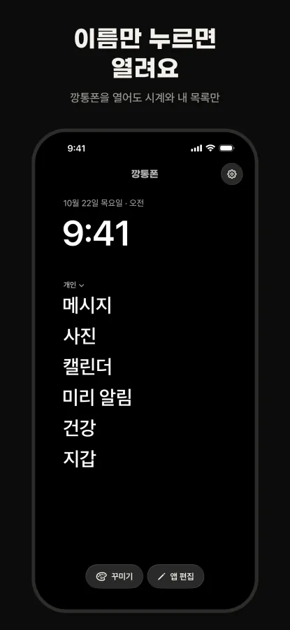
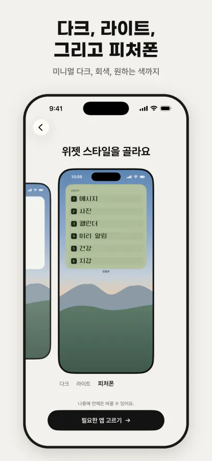
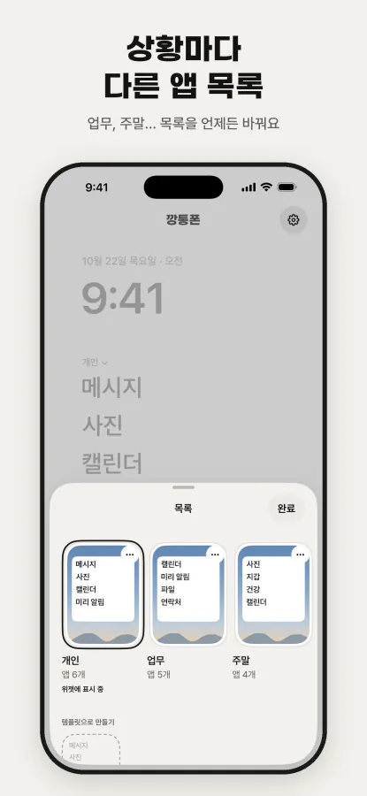

깡통폰
아이콘도 빨간 배지도 없이 꼭 쓰는 앱 이름만 글자 위젯으로 남겨, iPhone을 폴더폰처럼 심심하게 만드는 디지털 디톡스 앱.
깡통폰 화면 미리 보기




깡통폰 소개
깡통폰은 iPhone을 옛날 폴더폰처럼 ‘볼 게 별로 없는’ 폰으로 만드는 디지털 디톡스 앱입니다. 알록달록한 아이콘과 빨간 숫자 배지 대신 꼭 쓰는 앱의 이름만 홈 화면 위젯에 글자로 남깁니다. 종이·세이지·미드나이트·로즈 같은 완성형 스타일이나 피처폰 테마로 글꼴·간격·색을 맞출 수 있어, 어떤 배경화면 위에서도 차분하게 놓입니다.
스마트폰은 계속 써야 하지만 습관처럼 폰을 여는 일을 줄이고 싶은 사람을 위한 앱입니다. 업무·주말·잠들기 전처럼 상황마다 앱 목록을 따로 만들어 두고(목록 10개, 목록마다 앱 54개까지), 집중 모드나 제어 센터(iOS 18 이상)·단축어로 바꿔 씁니다.
처음 실행하면 위젯 스타일(다크·라이트·피처폰)을 고르고 초성 검색으로 필요한 앱만 골라 위젯을 만듭니다. 위젯은 지금 쓰는 홈 화면에 직접 추가하고, 이어서 다른 페이지 숨기기·Dock 정리·스크린 타임 설정(iPhone 설정 앱에서 직접)을 선택형 3단계로 안내합니다. 이름을 누르면 깡통폰이 잠깐 보인 뒤 그 앱이 열리고, 전화·카메라 같은 일부 Apple 앱은 처음에 한 번 추가하는 작은 도우미 단축어로 엽니다.
계정·추적·분석 도구·광고가 없고, 앱이 스스로 네트워크에 접속하지 않습니다. 목록과 꾸미기 설정은 iPhone 안에만 저장되며 App Store 개인정보 라벨도 ‘데이터가 수집되지 않음’입니다. 한 번 사면(₩4,900) 앱 안 구입·구독 없이 모든 기능을 쓰고, iOS 17 이상 iPhone에서 한국어·영어(Potato Phone)·일본어(ポテトフォン)로 쓸 수 있습니다.
주요 기능
- 앱 이름만 글자로 남기는 위젯 (6페이지 · 페이지당 9개)
- 종이·세이지·미드나이트·로즈 스타일과 피처폰 테마
- 상황별 앱 목록 10개 · 집중 모드·제어 센터로 전환
- 계정·광고·데이터 수집 없음, 한 번 구매로 모든 기능